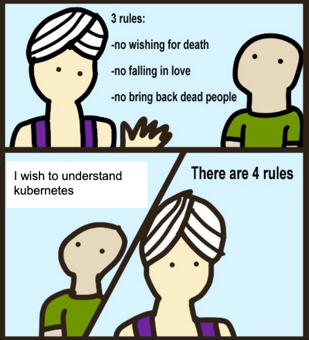
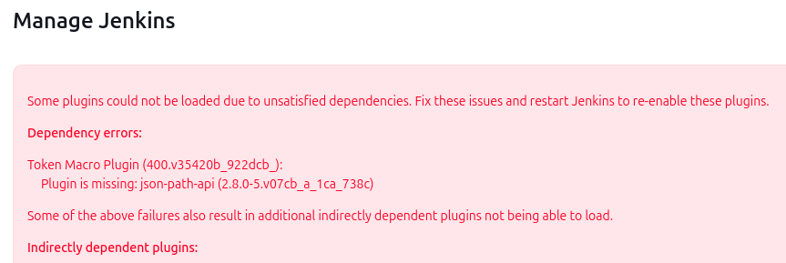
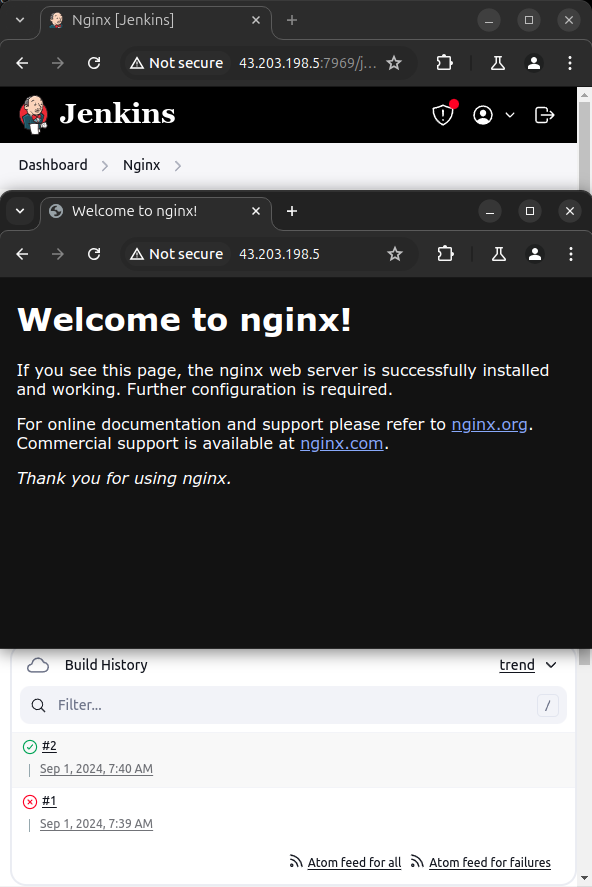

최근 CloudNet@에서 진행하고 있는 K8s Advanced Network Study(이하, KANS)에 참여하게 되었습니다.
난이도를 생각하면 KH(Hardcore)NS가 더 맞아보이지만…
k8s가 워낙 인기가 많기도 하지만, Pod 간 통신에는 많은 지식이 투여되기에 이번 기회에 살펴보기로 했습니다.

첫 주차는, 바로 Kubernetes에 진입하지 않고 Containerization에 대한 이해를 먼저 다뤄주셨습니다.
여타 쿠버네티스 강의와 달리 9주 간 매주 일요일에만 진행되는 세션인데도, 기반 기술을 다시 짚어주셔서 감사했습니다.
1. AWS EC2 Instance 셋업
CloudFormation을 통해, EC2 및 제반사항을 구성하여 주셨습니다만, 취미 삼아 Terraform 변환 작업을 해보았습니다. 하지 말았어야했는데… LoL
- cf2tf 툴이 많이 개선된 거 같아, 이번 기회에 다시 사용해보았으나 잘못 구성해준 사항을 고치느라 오히려 시간이 많이 소요되었습니다.
처음부터 직접 구성하는게 더 빠르지 않았을 까란 생각도 들었고 현 시점에서 멱등성이 제대로 구현이 안되서 께름칙합니다만, 아래 링크에서 확인할 수 있습니다. 시간이 허락해준다면 *.auto.tfvars 에 대해서는 별도의 포스팅으로 다룰 수 있도록 해보겠습니다.
- [Github/kans]: Branch
week1(dc37074). Output만 변경했는데도, 인스턴스 교체가 이루어지는 사소한 이슈가 있습니다. 그리고 인바운드 규칙은 나중에 수정하셔야하는 부분입니다.
AWS 웹콘솔에서 Launch Instance 기본값과 크게 다른 사항은 Root ENI에 Subnet 대역 내의 Private IP를 고정 할당해주는 것이었습니다.
2. Docker 셋업
근래에는 Docker가 당연하다시피 되어 참 다행(과연…?)이라고 생각하는데, 개인용으로 Docker는 Snapcraft로 쓰는지라 이때부터 험난했습니다;
Ubuntu에 Docker를 설치하지 않았다면 아래처럼 안내를 보실 수 있을텐데,
snap과 podman-docker 설명 외에는 Docker Docs를 보시기를 권장합니다.
ubuntu@MyServer:~/kans$ docker network create kankins
Command 'docker' not found, but can be installed with:
sudo snap install docker # version 24.0.5, or
sudo apt install docker.io # version 24.0.7-0ubuntu2~22.04.1
sudo apt install podman-docker # version 3.4.4+ds1-1ubuntu1.22.04.2
See 'snap info docker' for additional versions.
설치 방법
- Docker Docs
- One-click Shell Scripting: 세상 좋아졌네요.. EC2에는 이걸로 설치했습니다.
- APT Repository: 보통은 이걸 세팅합니다.
- Snapcraft/Docker
설치했다면 Docker 사용자에게 권한상승을 해줘야, 귀찮은 sudo를 생략할 수 있습니다.
말은 즉슨, 개인용이니 어느정도는 감안하셔서 사용하시면 된다는 의미이지요. 각 방법 별 권한상승 방법은 아래와 같습니다.
스터디을 진행해주신 gasida님의 말씀대로 해당 세션을 빠져나온(Logout) 후 다시 접속해야합니다.
세상에 안되는게 어딨어하고 좀 찾아보니 하위 쉘을 열면 어느 정도 가능해보이는데, 스터디 하다가 꼬이면 다시 테라폼 올려야해서 그냥 로그아웃했습니다; 이 부분 궁금하신 분은 reference의 stackoverflow를 참고해주세요.
# (0) One-click Installation
curl -fsSL https://get.docker.com -o get-docker.sh
sudo sh get-docker.sh
# (1) APT based
sudo groupadd docker
sudo usermod -aG docker $USER
newgrp docker
## Logout and Login Needed for session
# (2) Snap based
sudo addgroup --system docker
sudo adduser $USER docker
newgrp docker
sudo snap disable docker
sudo snap enable docker
3. Jenkins 이미지를 구워서 올려보자
- 이번 세션에서 제일 쉬워보이는 과제였는데, 매번 픽이 이상한 거 같습니다.
취미 빼고 Jenkins를 마지막으로 다뤄본게 2년 전이라, 겸사겸사 이정도면 눈감고 하겠지~ 했는데 사소한게 바뀐거 같아서 시간이 많이 소요되었습니다.
- 사소한 것 목록
- Documentation
- Base Image: Debian 2 Ubuntu
별도로, DockerHub는 Official 이미지는 6년도 지났겠다. Deprecated 명시를 떠나, Prune 한번만 해줬으면 좋겠습니다.
(0) Document 유의사항
Jenkins가 다 좋은데, 신규 유저용 공식문서 링크만 던져주기에는 살짝 미묘한 점이 있습니다.
On macOS and Linux의 (4)항에서 Debian을 베이스로 하지만, 이는 최신버전에서는 적용이 되지 않습니다.
작성일 기준으로 jenkins/jenkins:lts-jdk17 이미지를 사용 시, Ubuntu 베이스로 변경되었습니다.
무슨 사연이 있는지는 모르겠지만, 당연히 GPG 키사이닝 값이 다르니 터지는…
DinD 주제도 같이 다뤄보려고 했다가 시간이 부족해져서, 기본적인 부분만 다뤄보겠습니다.
(1) 브릿지 생성 및 Dockerfile 작성
- Docs대로라면 이렇게 만들어야 될 겁니다.
- 하지만, 기본값의 네트워크를 쓰는 것은 보통 권장사항은 아니며, 나중에 브릿지가 궁금하시면 [Docker Docs#Use user-defined bridge networks] 참고하시면 됩니다.
- 특히 Dockerfile 작성 부분에서 혼을 담아 설명해주셔서, 글 한번 읽고 아 Docker가 그랬었지하고 넘어갈 수 있었습니다.
# 1-1. Bridge Network
docker network create kankins
# 1-2. Dockerfile
cat <<EOF>Dockerfile
FROM jenkins/jenkins:lts-jdk17
USER root
RUN apt-get update && apt-get install -y lsb-release
RUN curl -fsSLo /usr/share/keyrings/docker.asc \
https://download.docker.com/linux/ubuntu/gpg
RUN echo "deb [arch=$(dpkg --print-architecture) \
signed-by=/usr/share/keyrings/docker.asc] \
https://download.docker.com/linux/ubuntu \
$(lsb_release -cs) stable" > /etc/apt/sources.list.d/docker.list
RUN apt-get update && apt-get install -y docker-ce-cli
USER jenkins
RUN jenkins-plugin-cli --plugins "blueocean docker-workflow"
EOF
(2) 이미지 빌드 및 실행
# 2. Build
docker build -t kankins-redocean:lts-jdk17-240818 .
# 3. Run
docker run \
--name kankins-redocean \
--restart=on-failure \
--detach \
--network kankins \
--env DOCKER_HOST=tcp://docker:2376 \
--env DOCKER_CERT_PATH=/certs/client \
--env DOCKER_TLS_VERIFY=1 \
--publish 7969:8080 \
--publish 50000:50000 \
--volume jenkins-data:/var/jenkins_home \
--volume jenkins-docker-certs:/certs/client:ro \
kankins-redocean:lts-jdk17-240818
# 4. Get Initial Password
docker exec -it kankins-redocean \
cat /var/jenkins_home/secrets/initialAdminPassword
(3) 자잘한 밑정리
테라폼 코드 변환 중에 인바운드 허용이 막혀있다는 걸, 이때 깨닫고 웹콘솔로 수정…

키 입력과 추가 플러그인 설치, 어드민 로그인을 웹페이지로 해야한다는 점이 매우 불안정해보이고, 거슬리는 부분입니다. 여하간 설치가 끝났고 접속은 됩니다. 해보니… 으-음

- 로그가 떠서 행복하군요 :)
#ubuntu@MyServer:~/kans$ docker logs da 2>&1 | grep -i SEVERE
2024-09-01 02:08:30.398+0000 [id=32] SEVERE jenkins.InitReactorRunner$1#onTaskFailed: Failed Loading plugin Token Macro Plugin v400.v35420b_922dcb_ (token-macro)
2024-09-01 02:08:30.400+0000 [id=33] SEVERE jenkins.InitReactorRunner$1#onTaskFailed: Failed Loading plugin Favorite v2.221.v19ca_666b_62f5 (favorite)
2024-09-01 02:08:30.401+0000 [id=34] SEVERE jenkins.InitReactorRunner$1#onTaskFailed: Failed Loading plugin REST Implementation for Blue Ocean v1.27.14 (blueocean-rest-impl)
2024-09-01 02:08:30.406+0000 [id=34] SEVERE jenkins.InitReactorRunner$1#onTaskFailed: Failed Loading plugin GitHub plugin v1.40.0 (github)
2024-09-01 02:08:30.407+0000 [id=34] SEVERE jenkins.InitReactorRunner$1#onTaskFailed: Failed Loading plugin GitHub Branch Source Plugin v1797.v86fdb_4d57d43 (github-branch-source)
2024-09-01 02:08:30.413+0000 [id=33] SEVERE jenkins.InitReactorRunner$1#onTaskFailed: Failed Loading plugin Pipeline implementation for Blue Ocean v1.27.14 (blueocean-pipeline-api-impl)
2024-09-01 02:08:30.414+0000 [id=33] SEVERE jenkins.InitReactorRunner$1#onTaskFailed: Failed Loading plugin Bitbucket Pipeline for Blue Ocean v1.27.14 (blueocean-bitbucket-pipeline)
2024-09-01 02:08:30.416+0000 [id=33] SEVERE jenkins.InitReactorRunner$1#onTaskFailed: Failed Loading plugin Events API for Blue Ocean v1.27.14 (blueocean-events)
2024-09-01 02:08:30.417+0000 [id=31] SEVERE jenkins.InitReactorRunner$1#onTaskFailed: Failed Loading plugin Git Pipeline for Blue Ocean v1.27.14 (blueocean-git-pipeline)
2024-09-01 02:08:30.418+0000 [id=33] SEVERE jenkins.InitReactorRunner$1#onTaskFailed: Failed Loading plugin GitHub Pipeline for Blue Ocean v1.27.14 (blueocean-github-pipeline)
2024-09-01 02:08:30.419+0000 [id=31] SEVERE jenkins.InitReactorRunner$1#onTaskFailed: Failed Loading plugin Blue Ocean Pipeline Editor v1.27.14 (blueocean-pipeline-editor)
2024-09-01 02:08:30.420+0000 [id=33] SEVERE jenkins.InitReactorRunner$1#onTaskFailed: Failed Loading plugin Blue Ocean v1.27.14 (blueocean)
# ubuntu@MyServer:~/kans$ docker logs da 2>&1 | grep -i missing
- Plugin is missing: json-path-api (2.8.0-5.v07cb_a_1ca_738c)
이후의 내용은 아래에서 수정하면서 다루겠습니다.
4. 브릿지 없이 해보자…?
- docker는 de facto이니, 컨테이너 끄고 이미지 지우는 건 생략(서술 안해도 되서 편하다…)
- 별도 생성한 bridge는 더이상 사용하지 않으니, 지워주시면 됩니다.
- 빠른 실행을 위해, 초기 구동 시 생성된 volume은 삭제하지 않았습니다.
- 이번에는 브릿지를 생성하지 않고, Host의 Docker 데몬을 사용해보겠습니다.(?)
사실 저도 무슨 말인가 생각하고 있습니다. 보통 거꾸로 아님..?
(1) Dockerfile 작성
앞서 오류를 알았으니, 포스팅 작성 시점 기준으로 한번 수정해보겠습니다. 수정하고 나니, 위의 오류는 잡았네요.
cat <<EOF>Dockerfile
FROM jenkins/jenkins:lts-jdk17
USER jenkins
RUN jenkins-plugin-cli --plugins \
blueocean \
docker-workflow \
antisamy-markup-formatter \
json-path-api \
token-macro \
build-timeout \
timestamper \
resource-disposer \
ws-cleanup \
ant \
gradle \
workflow-aggregator \
github \
github-branch-source \
pipeline-github-lib \
metrics \
pipeline-graph-view \
eddsa-api \
trilead-api \
ssh-slaves \
matrix-auth \
pam-auth \
ldap \
email-ext \
theme-manager \
dark-theme
EOF
- 오-옹. CD 한 장에는 절대 넣을 수 없는 웅장한 이미지가 탄생하였습니다! :)
# ubuntu@MyServer:~/kans$ docker build -t kankins-redocean:lts-jdk17-240818 .
# ubuntu@MyServer:~/kans$ docker images
REPOSITORY TAG IMAGE ID CREATED SIZE
kankins-redocean lts-jdk17-240818 ecd80984a2ae 23 minutes ago 824MB
(2) 컨테이너 실행
- 브릿지를 사용하지 않는대신, Host의 Docker 런타임의 소켓을 공유해보겠습니다.
| 구분 | Moby | Host(From) | Container(To) | Notes |
|---|---|---|---|---|
| As-is | bridge(local) | - | - | Default |
| As-is | volume | jenkins-docker-certs | /certs/client | DinD 데몬의 인증서 |
| As-is | env | - | - | DOCKER_HOST=tcp://docker:2376 (제거) |
| As-is | env | - | - | DOCKER_CERT_PATH=/certs/client (제거) |
| As-is | env | - | - | DOCKER_TLS_VERIFY=1 (제거) |
| To-be | volume | /var/run/docker.sock | /var/run/docker.sock | Host의 Docker Unix Socket |
| To-be | volume | /usr/bin/docker | /usr/bin/docker | Host의 Docker Engine(Client) |
docker run \
--name kankins-redocean \
--restart=on-failure \
--detach \
--volume /var/run/docker.sock:/var/run/docker.sock \
--volume /usr/bin/docker:/usr/bin/docker \
--publish 7969:8080 \
--publish 50000:50000 \
--volume jenkins-data:/var/jenkins_home \
kankins-redocean:lts-jdk17-240818
(3) Container의 Jenkins 유저에 권한 부여
- Host의 Docker 데몬을 사용하려면, Container의 Jenkins 유저에 권한을 부여해야합니다.
기존의 Dockerfile에서는 Docker TLS 활성화 및 별도의 Docker 볼륨을 물렸지만, 다 내려놓았습니다.
# 1. Container의 Docker 소켓의 GID 확인
docker exec --user 0 kankins-redocean stat -c '%g' /var/run/docker.sock
# 2. Docker 그룹의 사용자가 Docker 소켓을 사용할 수 있도록 허용
docker exec --user 0 kankins-redocean groupadd -g $(docker exec --user 0 kankins-redocean stat -c '%g' /var/run/docker.sock) docker
# 3. Host의 Docker 그룹에 Jenkins 유저 추가
docker exec --user 0 kankins-redocean usermod -aG docker jenkins
# (선택) 권한 확인
docker exec --user jenkins kankins-redocean docker ps
- 이후, Host(EC2)에서 Docker를 재시작하여 허용했습니다.
sudo service docker restart
systemctl restart docker
(4) Jenkins Pipepline
- 이미 작년 8월에 하셨던 분의 포스팅을 참조하여 파이프라인을 돌렸으나, 가볍게 Nginx 돌려보고 마치겠습니다.
pipeline {
agent any
stages {
stage('Start Nginx') {
steps {
sh '''echo "pwd: \\$\\$$(pwd)\\$\\$"
echo "whoami: \\$\\$$(whoami)\\$\\$"
docker run --name docker-nginx -p 80:80 -d nginx:stable-alpine'''
}
}
}
}
접속도 정상적으로 확인됩니다.

Nginx가 Host에서 구동하는 것을 확인하였습니다.
또한 Host의 Docker 데몬을 사용하였기에, 이미지를 확인해볼 수 있습니다.
# ubuntu@MyServer:~/kans$ docker images
REPOSITORY TAG IMAGE ID CREATED SIZE
simple-jenkins-image latest 131b4e942d9a 35 minutes ago 7.8MB
kankins-redocean lts-jdk17-240818 c771835009b8 54 minutes ago 616MB
nginx stable-alpine 9703b2608a98 2 weeks ago 43.3MB
alpine latest 324bc02ae123 5 weeks ago 7.8MB
5. Why…?
(1) Unix 소켓 통신 마운트
- 중간에 이미
/var/run/docker.sock의 권한을 허용하면서 눈치 채셨겠지만, 이는 TCP/IP 대신, Unix Socket을 활용하여 접근을 하였습니다. - 널널한 개발자님의 Youtube 영상(15:54~) 에도 친절히 나와있지만, Host의 도커 엔진의 소켓과 바이너리를 Jenkins 컨테이너에게 마운트 함으로서 통신을 할 수 있었습니다.
(2) 네트워크 설정 살펴보기
- 네트워크 정보 확인 : docker0
# ubuntu@MyServer:~/kans$ ip -br -c addr
lo UNKNOWN 127.0.0.1/8 ::1/128
ens5 UP 192.168.50.10/24 metric 100 fe80::ca:aff:fecd:fc67/64
docker0 UP 172.17.0.1/16 fe80::42:61ff:fe65:129c/64
br-e4c35b376649 DOWN 172.18.0.1/16 fe80::42:b7ff:fe97:45dd/64
veth54addf7@if53 UP fe80::b86f:cbff:fe47:4438/64
veth311d18d@if57 UP fe80::849b:b9ff:fe2f:ba63/64
- 브릿지 정보 확인
# ubuntu@MyServer:~/kans$ brctl show
bridge name bridge id STP enabled interfaces
br-e4c35b376649 8000.0242b79745dd no
docker0 8000.02426165129c no veth311d18d
veth54addf7
- FILTER
# ubuntu@MyServer:~/kans$ sudo iptables -t filter -S
-P INPUT ACCEPT
## FORWARD ACCEPT가 아닌 DROP으로 설정되어 있습니다.
-P FORWARD DROP
-P OUTPUT ACCEPT
-N DOCKER
-N DOCKER-ISOLATION-STAGE-1
-N DOCKER-ISOLATION-STAGE-2
-N DOCKER-USER
-A FORWARD -j DOCKER-USER
-A FORWARD -j DOCKER-ISOLATION-STAGE-1
-A FORWARD -o docker0 -m conntrack --ctstate RELATED,ESTABLISHED -j ACCEPT
-A FORWARD -o docker0 -j DOCKER
## docker0 대역에서 (1) 대역 간 및 (2) 외부 전달 시 ACCEPT로 설정
-A FORWARD -i docker0 ! -o docker0 -j ACCEPT
-A FORWARD -i docker0 -o docker0 -j ACCEPT
-A FORWARD -o br-e4c35b376649 -m conntrack --ctstate RELATED,ESTABLISHED -j ACCEPT
-A FORWARD -o br-e4c35b376649 -j DOCKER
-A FORWARD -i br-e4c35b376649 ! -o br-e4c35b376649 -j ACCEPT
-A FORWARD -i br-e4c35b376649 -o br-e4c35b376649 -j ACCEPT
-A DOCKER -d 172.17.0.2/32 ! -i docker0 -o docker0 -p tcp -m tcp --dport 8080 -j ACCEPT
-A DOCKER -d 172.17.0.2/32 ! -i docker0 -o docker0 -p tcp -m tcp --dport 50000 -j ACCEPT
-A DOCKER -d 172.17.0.3/32 ! -i docker0 -o docker0 -p tcp -m tcp --dport 80 -j ACCEPT
-A DOCKER-ISOLATION-STAGE-1 -i docker0 ! -o docker0 -j DOCKER-ISOLATION-STAGE-2
-A DOCKER-ISOLATION-STAGE-1 -i br-e4c35b376649 ! -o br-e4c35b376649 -j DOCKER-ISOLATION-STAGE-2
-A DOCKER-ISOLATION-STAGE-1 -j RETURN
-A DOCKER-ISOLATION-STAGE-2 -o docker0 -j DROP
-A DOCKER-ISOLATION-STAGE-2 -o br-e4c35b376649 -j DROP
-A DOCKER-ISOLATION-STAGE-2 -j RETURN
-A DOCKER-USER -j RETURN
- NAT POSTROUTING
# ubuntu@MyServer:~/kans$ sudo iptables -t nat -S
-P PREROUTING ACCEPT
-P INPUT ACCEPT
-P OUTPUT ACCEPT
-P POSTROUTING ACCEPT
-N DOCKER
-A PREROUTING -m addrtype --dst-type LOCAL -j DOCKER
-A OUTPUT ! -d 127.0.0.0/8 -m addrtype --dst-type LOCAL -j DOCKER
## 172.17.0.0/16 대역에서 외부 전달 시 MASQUERADE(SNAT) 정책이 추가되었음을 확인할 수 있습니다.
-A POSTROUTING -s 172.17.0.0/16 ! -o docker0 -j MASQUERADE
-A POSTROUTING -s 172.18.0.0/16 ! -o br-e4c35b376649 -j MASQUERADE
-A POSTROUTING -s 172.17.0.2/32 -d 172.17.0.2/32 -p tcp -m tcp --dport 8080 -j MASQUERADE
-A POSTROUTING -s 172.17.0.2/32 -d 172.17.0.2/32 -p tcp -m tcp --dport 50000 -j MASQUERADE
-A POSTROUTING -s 172.17.0.3/32 -d 172.17.0.3/32 -p tcp -m tcp --dport 80 -j MASQUERADE
-A DOCKER -i docker0 -j RETURN
-A DOCKER -i br-e4c35b376649 -j RETURN
-A DOCKER ! -i docker0 -p tcp -m tcp --dport 7969 -j DNAT --to-destination 172.17.0.2:8080
-A DOCKER ! -i docker0 -p tcp -m tcp --dport 50000 -j DNAT --to-destination 172.17.0.2:50000
-A DOCKER ! -i docker0 -p tcp -m tcp --dport 80 -j DNAT --to-destination 172.17.0.3:80
마치며
- 이부분은 추가 후술 하겠습니다.
References

kkumtree
Source code on GitHub
© 2025 kkumtree and contributors All rights reserved.
Licensed under
CC BY-NC-ND 4.0